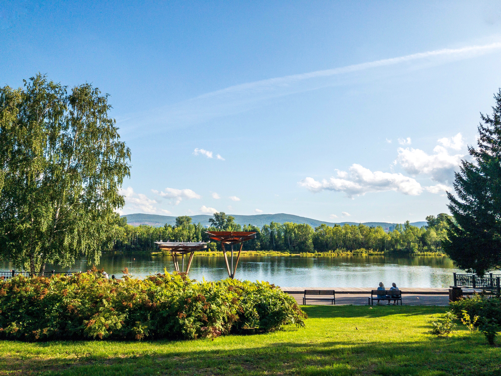

The is a picture of "The Park." Known far and wide as the best park in the western world, there are a plethora of different species that reside in this park, from amphibians to mammals, it has even been told that dinosaurs can be spotted on a rainy day when the sun shines.
See the Gallery!


